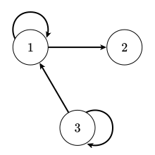
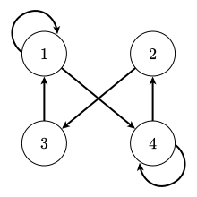

1.
Each matrix below represents a relation. The rows and columns are numbered \(1\) through \(3\) or \(4\text{.}\) Give the arrow diagram for each matrix, then express each relation as a set of ordered pairs.
-
\(\displaystyle \begin{bmatrix} 0 \amp 1 \amp 0 \\ 1 \amp 0 \amp 0 \\ 0 \amp 0 \amp 1 \end{bmatrix}\)
-
\(\displaystyle \begin{bmatrix} 1 \amp 1 \amp 0 \\ 0 \amp 0 \amp 0 \\ 1 \amp 0 \amp 1 \end{bmatrix}\)
-
\(\displaystyle \begin{bmatrix} 1 \amp 0 \amp 0 \amp 1 \\ 0 \amp 0 \amp 1 \amp 0 \\ 1 \amp 0 \amp 0 \amp 0 \\ 0 \amp 1 \amp 0 \amp 1 \end{bmatrix}\)
Solution.
-
From the given matrix, we see that \(2 R 1, 1 R 2\text{,}\) and \(3 R 3\text{.}\) Therefore, the set of ordered pairs for this relation is \(\{(1,2), (2,1), (3,3)\}\text{.}\) The arrow diagram is shown below at left.
-
From the given matrix, we see that \(1 R 1, 1 R 2, 3 R 1,\) and \(3 R 3\text{.}\) Hence, the set of ordered pairs for this relation is \(\{ (1,1), (1,2), (3,1), (3,3) \}\text{.}\) The arrow diagram is shown below at center.
-
Reading the matrix, we see \(1 R 1, 1 R 4, 2 R 3, 3 R 1, 4 R 2\text{,}\) and \(4 R 4\text{.}\) The set of ordered pairs will therefore be \(\{(1,1), (1,4), (2,3), (3,1), (4,2), (4,4)\}\text{.}\) The arrow diagram is shown below at right.


